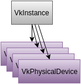

Code file for this section is 02-enumerate_devices.cpp
The next step in the samples progression is determining the physical devices present on the system.
After you have created an instance, the loader knows how many Vulkan physical devices are available, but your application doesn't know this yet. The application learns how many devices are available by asking the Vulkan API for a list of physical devices.

Physical devices are related to the instance as shown in the above diagram.
Obtaining list of objects is a fairly common operation in Vulkan, and the API has a consistent pattern for doing so. API functions that return lists have count and pointer arguments. The count argument is a pointer to an integer so that the API can set its value. The steps are:
You will see this pattern often in the Vulkan API.
The vkEnumeratePhysicalDevices function returns only a list of handles
for each physical device on the system.
A physical device might be a graphics card that one plugs into a desktop computer, some sort
of GPU core on an SoC, etc.
If there are multiple devices available, the application must decide somehow
which of them it will use.
Our sample code enumerates the physical devices as follows:
// Get the number of devices (GPUs) available.
VkResult res = vkEnumeratePhysicalDevices(info.inst, &gpu_count, NULL);
// Allocate space and get the list of devices.
info.gpus.resize(gpu_count);
res = vkEnumeratePhysicalDevices(info.inst, &gpu_count, info.gpus.data());
Note that the info.gpus variable is a vector of type VkPhysicalDevice,
which is a handle.
All enumerate does is get the list of physical device handles.
The device program, which is the next step in the progression,
looks at this list to decide which device to use.
info StructureYou'll notice the use of an info variable in the above code.
Each sample program uses the global info structure
variable to track Vulkan information and application state.
This facilitates using more compact function calls to perform
steps that have already been covered in this tutorial.
For example, see the line of code in the enumerate program:
`init_instance(info, "vulkansamples_enumerate");`
which performs the steps discussed on the instance page
of this tutorial.
init_instance() creates the instance and stores the handle in info.
And then vkEnumeratePhysicalDevices() uses info.inst in the call to
vkEnumeratePhysicalDevices().
Now that you have the list of devices (GPUs), it is now time to select a GPU and create a Vulkan logical device object so that you can start working with that GPU.
| Previous: Instance | Back to: Index | Next: Device |